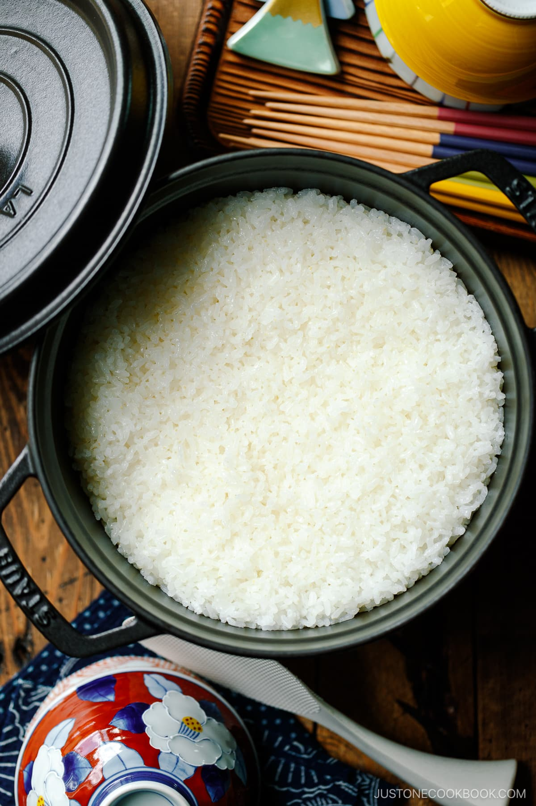

Steamed Rice

Description
The Japanese consider rice as the main course and most important part of the meal. Enjoy tasty steamed rice without using a rice cooker.
Source for recipe
Ingredients
- 1 cup premium Japanese short grain rice
- 1 1/4 cups (300 ml) water
Steps
- Put rice in a large bowl. Gently wash the rice in a circular motion and discard the water. Repeat this process about 4-5 times until the water becomes almost translucent. Let the rice soak in water for 30 minutes. Transfer the rice into a sieve and drain for 15 minutes.
- Combine the rice and water in a heavy bottom pot and bring it to a boil over medium heat. Take a quick peek to see if water is boiling (otherwise do not open the lid).
- Once water is boiling, turn the heat to low and cook covered for 12 to 13 minutes, or until the water is completely absorbed (take a quick peek!). If you see there is water left, close the lid and continue cooking for a little longer.
- Remove the pot (with the lid on) from the heat source and let it steam for another 10 minutes. Fluff the rice with a rice paddle when it’s done.
Home